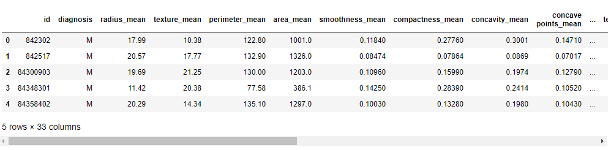
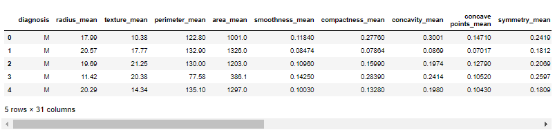
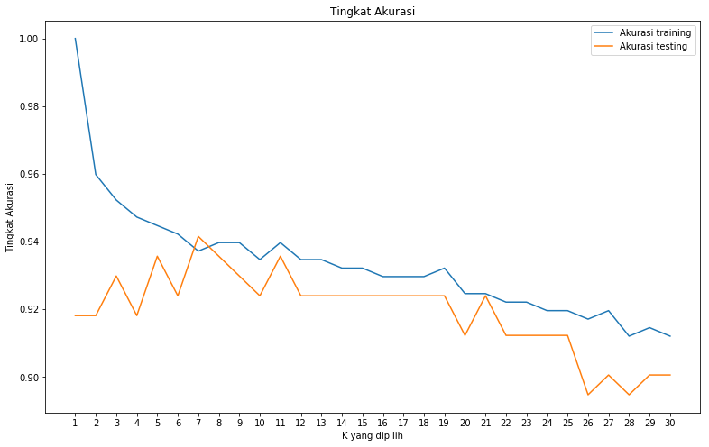

Implementasi K-Nearest Neighbor Breast Cancer Wisconsin (Diagnostic) Dataset¶
Import Library yang dibutuhkan¶
import numpy as np
import numpy as np
import pandas as pd
import matplotlib.pyplot as plt
from sklearn.neighbors import KNeighborsClassifier
from sklearn.model_selection import train_test_split
from sklearn import metrics #importing modul metrikMemuat Dataset¶
Mengimport dataset yang digunakan untuk pengimplemtasian K-Nearest Neighbor
dataset bisa didownload disini atau langsung dari kaggle disini
# Memuat dataset
data = pd.read_csv("E:\Semester 4\data mining/bc.csv",encoding = "ISO-8859-1")Data Preprocessing¶
Menampilkan 5 Data teratas¶
Menampilkan jumlah masing-masing diagnosis dan kolom diagnosis digunakan sebagai class nantinya.
data.head(5)Output:

Menampilkan ringkasan dataset serta menghilangkan kolom yang tidak berguna¶
# ringkasan dataset
data.info()Output:
<class 'pandas.core.frame.DataFrame'>
RangeIndex: 569 entries, 0 to 568
Data columns (total 33 columns):
id 569 non-null int64
diagnosis 569 non-null object
radius_mean 569 non-null float64
texture_mean 569 non-null float64
perimeter_mean 569 non-null float64
area_mean 569 non-null float64
smoothness_mean 569 non-null float64
compactness_mean 569 non-null float64
concavity_mean 569 non-null float64
concave points_mean 569 non-null float64
symmetry_mean 569 non-null float64
fractal_dimension_mean 569 non-null float64
radius_se 569 non-null float64
texture_se 569 non-null float64
perimeter_se 569 non-null float64
area_se 569 non-null float64
smoothness_se 569 non-null float64
compactness_se 569 non-null float64
concavity_se 569 non-null float64
concave points_se 569 non-null float64
symmetry_se 569 non-null float64
fractal_dimension_se 569 non-null float64
radius_worst 569 non-null float64
texture_worst 569 non-null float64
perimeter_worst 569 non-null float64
area_worst 569 non-null float64
smoothness_worst 569 non-null float64
compactness_worst 569 non-null float64
concavity_worst 569 non-null float64
concave points_worst 569 non-null float64
symmetry_worst 569 non-null float64
fractal_dimension_worst 569 non-null float64
Unnamed: 32 0 non-null float64
dtypes: float64(31), int64(1), object(1)
memory usage: 146.8+ KBbisa dilihat dari hasil output diatas ada kolom yang tidak bernama ("Unnamed") akan kita hilangkan, serta menghilangkan kolom yang tidak berguna yaitu kolom ()"id") :
#menghapus kolom yang tidak berguna
#menghapus kolom "id"
data.drop("id",axis=1,inplace=True)
#menghapus the "Unnamed: 32" column
data.drop("Unnamed: 32",axis=1,inplace=True) #hasil
data.info()Output:
bisa dilihat kolom "id" dan kolom yang tidak mempunyai nama "unnamed" telah hilang
<class 'pandas.core.frame.DataFrame'>
RangeIndex: 569 entries, 0 to 568
Data columns (total 31 columns):
diagnosis 569 non-null object
radius_mean 569 non-null float64
texture_mean 569 non-null float64
perimeter_mean 569 non-null float64
area_mean 569 non-null float64
smoothness_mean 569 non-null float64
compactness_mean 569 non-null float64
concavity_mean 569 non-null float64
concave points_mean 569 non-null float64
symmetry_mean 569 non-null float64
fractal_dimension_mean 569 non-null float64
radius_se 569 non-null float64
texture_se 569 non-null float64
perimeter_se 569 non-null float64
area_se 569 non-null float64
smoothness_se 569 non-null float64
compactness_se 569 non-null float64
concavity_se 569 non-null float64
concave points_se 569 non-null float64
symmetry_se 569 non-null float64
fractal_dimension_se 569 non-null float64
radius_worst 569 non-null float64
texture_worst 569 non-null float64
perimeter_worst 569 non-null float64
area_worst 569 non-null float64
smoothness_worst 569 non-null float64
compactness_worst 569 non-null float64
concavity_worst 569 non-null float64
concave points_worst 569 non-null float64
symmetry_worst 569 non-null float64
fractal_dimension_worst 569 non-null float64
dtypes: float64(30), object(1)
memory usage: 137.9+ KBKemudian kita lihat lagi kolom beserta 5 data pertama:
# 5 baris pertama
data.head(5)Output:

Mengganti class M dan B menjadi 0 dan 1¶
diagnosis adalah variabel yang bertanggung jawab untuk klasifikasi disini kita mengganti M dan B masing-masing dengan 1 dan 0
#diagnosis adalah variabel yang bertanggung jawab untuk klasifikasi
#mengganti M dan B masing-masing dengan 1 dan 0
data.diagnosis=data.diagnosis.map({'M':1,'B':0})Kemudian kita hitung berapa banyak jumlah masing- masing feature
#menghitung variabel diagnosis
data.diagnosis.value_counts()output:
0 357
1 212
Name: diagnosis, dtype: int64Membagi data 30% sebagai data testing dan 70% sebagai data training¶
# preprocessing dataset selesai
#splitting dataset ke training dan testing
train, test = train_test_split(data, test_size = 0.3,random_state=1234)#mencari hasil
print(train.shape)
print(test.shape)(398, 31)
(171, 31)Membuat variabel independen dan responsible¶
variabel independen dan responsible nantinya akan digunakan dalam proses prediksi
variable independen mengambil dari semua kolom dan variable responsible dari diagnosis
#membuat variabel independen untuk training
train_X = train.iloc[:, 1:31]
#membuat variabel responsible untuk training
train_y=train.diagnosis
#membuat variabel independen untuk testing
test_X= test.iloc[:, 1:31]
#membuat variabel responsible untuk ttesting
test_y =test.diagnosiskita cek dulu berapa jumlahnya
#mencari hasil
print(train_X.shape)
print(train_y.shape)
print(test_X.shape)
print(test_y.shape)output:
(398, 30)
(398,)
(171, 30)
(171,)Mencari K yang terbaik(ideal)¶
K yang terbaik disini akan menghasilkan akurasi yang tinggi, Pada langkah ini saya memberikan range / jarak 1 sampai 30 untuk mencari K terbaik dan akurasi terbaik. Sehingga saya melakukan pengulangan 1 - 30 dan mencari nilai akurasi tertinggi.
neighbors=np.arange(1,31)
accuracy_train=[]
accuracy_test=[]
for i,k in enumerate(neighbors):
knn=KNeighborsClassifier(n_neighbors=k)
knn.fit(train_X,train_y)
accuracy_train.append(knn.score(train_X,train_y))
accuracy_test.append(knn.score(test_X,test_y))
plt.figure(figsize=(13,8))
plt.plot(neighbors,accuracy_train,label="Akurasi training")
plt.plot(neighbors,accuracy_test,label="Akurasi testing")
acideal=np.max(accuracy_test)
kideal=1+accuracy_test.index(np.max(accuracy_test))
plt.title('Tingkat Akurasi')
plt.xlabel("K yang dipilih")
plt.ylabel("Tingkat Akurasi")
plt.xticks(neighbors)
plt.legend()
plt.show()
print("Akurasi ideal:",acideal)
print("K ideal:",kideal)Output:

Akurasi ideal: 0.9415204678362573
K ideal: 7Akurasi yang ideal 0.9415204678362573 pada k = 7
Menghitung KNN¶
#membuat instance
model = KNeighborsClassifier(n_neighbors=int(input("Masukan jumlah k:")))
#learning
model.fit(train_X,train_y)
#Prediksi
prediction=model.predict(test_X)
#evaluation (Akurasi)
print("Akurasi:",metrics.accuracy_score(prediction,test_y))
#evaluation(Confusion Metrix)
print("Confusion Metrix:\n",metrics.confusion_matrix(prediction,test_y))Output:
Masukan jumlah k:7
Akurasi: 0.9415204678362573
Confusion Metrix:
[[102 7]
[ 3 59]]Menampilkan Hasil Prediksi Datatesting¶
Pada langkah ini kita menggabungkan data testing, diagnosis dan prediction. sehingga kita dapat melihat hasil prediksi dari semua data.
datatest=pd.DataFrame(test_X)
datatest['diagnosis']=test_y
datatest['prediksi']=prediction
print(datatest)Output:
radius_mean texture_mean perimeter_mean area_mean smoothness_mean \
531 11.670 20.02 75.21 416.2 0.10160
166 10.800 9.71 68.77 357.6 0.09594
485 12.450 16.41 82.85 476.7 0.09514
66 9.465 21.01 60.11 269.4 0.10440
220 13.650 13.16 87.88 568.9 0.09646
356 13.050 18.59 85.09 512.0 0.10820
414 15.130 29.81 96.71 719.5 0.08320
525 8.571 13.10 54.53 221.3 0.10360
77 18.050 16.15 120.20 1006.0 0.10650
239 17.460 39.28 113.40 920.6 0.09812
254 19.450 19.33 126.50 1169.0 0.10350
447 14.800 17.66 95.88 674.8 0.09179
301 12.460 19.89 80.43 471.3 0.08451
133 15.710 13.93 102.00 761.7 0.09462
187 11.710 17.19 74.68 420.3 0.09774
78 20.180 23.97 143.70 1245.0 0.12860
319 12.430 17.00 78.60 477.3 0.07557
412 9.397 21.68 59.75 268.8 0.07969
349 11.950 14.96 77.23 426.7 0.11580
11 15.780 17.89 103.60 781.0 0.09710
240 13.640 15.60 87.38 575.3 0.09423
29 17.570 15.05 115.00 955.1 0.09847
302 20.090 23.86 134.70 1247.0 0.10800
521 24.630 21.60 165.50 1841.0 0.10300
373 20.640 17.35 134.80 1335.0 0.09446
481 13.900 19.24 88.73 602.9 0.07991
100 13.610 24.98 88.05 582.7 0.09488
304 11.460 18.16 73.59 403.1 0.08853
159 10.900 12.96 68.69 366.8 0.07515
360 12.540 18.07 79.42 491.9 0.07436
.. ... ... ... ... ...
202 23.290 26.67 158.90 1685.0 0.11410
435 13.980 19.62 91.12 599.5 0.10600
375 16.170 16.07 106.30 788.5 0.09880
47 13.170 18.66 85.98 534.6 0.11580
497 12.470 17.31 80.45 480.1 0.08928
13 15.850 23.95 103.70 782.7 0.08401
221 13.560 13.90 88.59 561.3 0.10510
22 15.340 14.26 102.50 704.4 0.10730
255 13.960 17.05 91.43 602.4 0.10960
109 11.340 21.26 72.48 396.5 0.08759
348 11.470 16.03 73.02 402.7 0.09076
129 19.790 25.12 130.40 1192.0 0.10150
152 9.731 15.34 63.78 300.2 0.10720
67 11.310 19.04 71.80 394.1 0.08139
213 17.420 25.56 114.50 948.0 0.10060
495 14.870 20.21 96.12 680.9 0.09587
517 19.890 20.26 130.50 1214.0 0.10370
219 19.530 32.47 128.00 1223.0 0.08420
290 14.410 19.73 96.03 651.0 0.08757
488 11.680 16.17 75.49 420.5 0.11280
309 13.050 13.84 82.71 530.6 0.08352
6 18.250 19.98 119.60 1040.0 0.09463
405 10.940 18.59 70.39 370.0 0.10040
452 12.000 28.23 76.77 442.5 0.08437
54 15.100 22.02 97.26 712.8 0.09056
305 11.600 24.49 74.23 417.2 0.07474
560 14.050 27.15 91.38 600.4 0.09929
285 12.580 18.40 79.83 489.0 0.08393
355 12.560 19.07 81.92 485.8 0.08760
329 16.260 21.88 107.50 826.8 0.11650
compactness_mean concavity_mean concave points_mean symmetry_mean \
531 0.09453 0.042000 0.021570 0.1859
166 0.05736 0.025310 0.016980 0.1381
485 0.15110 0.154400 0.048460 0.2082
66 0.07773 0.021720 0.015040 0.1717
220 0.08711 0.038880 0.025630 0.1360
356 0.13040 0.096030 0.056030 0.2035
414 0.04605 0.046860 0.027390 0.1852
525 0.07632 0.025650 0.015100 0.1678
77 0.21460 0.168400 0.108000 0.2152
239 0.12980 0.141700 0.088110 0.1809
254 0.11880 0.137900 0.085910 0.1776
447 0.08890 0.040690 0.022600 0.1893
301 0.10140 0.068300 0.030990 0.1781
133 0.09462 0.071350 0.059330 0.1816
187 0.06141 0.038090 0.032390 0.1516
78 0.34540 0.375400 0.160400 0.2906
319 0.03454 0.013420 0.016990 0.1472
412 0.06053 0.037350 0.005128 0.1274
349 0.12060 0.011710 0.017870 0.2459
11 0.12920 0.099540 0.066060 0.1842
240 0.06630 0.047050 0.037310 0.1717
29 0.11570 0.098750 0.079530 0.1739
302 0.18380 0.228300 0.128000 0.2249
521 0.21060 0.231000 0.147100 0.1991
373 0.10760 0.152700 0.089410 0.1571
481 0.05326 0.029950 0.020700 0.1579
100 0.08511 0.086250 0.044890 0.1609
304 0.07694 0.033440 0.015020 0.1411
159 0.03718 0.003090 0.006588 0.1442
360 0.02650 0.001194 0.005449 0.1528
.. ... ... ... ...
202 0.20840 0.352300 0.162000 0.2200
435 0.11330 0.112600 0.064630 0.1669
375 0.14380 0.066510 0.053970 0.1990
47 0.12310 0.122600 0.073400 0.2128
497 0.07630 0.036090 0.023690 0.1526
13 0.10020 0.099380 0.053640 0.1847
221 0.11920 0.078600 0.044510 0.1962
22 0.21350 0.207700 0.097560 0.2521
255 0.12790 0.097890 0.052460 0.1908
109 0.06575 0.051330 0.018990 0.1487
348 0.05886 0.025870 0.023220 0.1634
129 0.15890 0.254500 0.114900 0.2202
152 0.15990 0.410800 0.078570 0.2548
67 0.04701 0.037090 0.022300 0.1516
213 0.11460 0.168200 0.065970 0.1308
495 0.08345 0.068240 0.049510 0.1487
517 0.13100 0.141100 0.094310 0.1802
219 0.11300 0.114500 0.066370 0.1428
290 0.16760 0.136200 0.066020 0.1714
488 0.09263 0.042790 0.031320 0.1853
309 0.03735 0.004559 0.008829 0.1453
6 0.10900 0.112700 0.074000 0.1794
405 0.07460 0.049440 0.029320 0.1486
452 0.06450 0.040550 0.019450 0.1615
54 0.07081 0.052530 0.033340 0.1616
305 0.05688 0.019740 0.013130 0.1935
560 0.11260 0.044620 0.043040 0.1537
285 0.04216 0.001860 0.002924 0.1697
355 0.10380 0.103000 0.043910 0.1533
329 0.12830 0.179900 0.079810 0.1869
fractal_dimension_mean ... perimeter_worst area_worst \
531 0.06461 ... 87.00 550.6
166 0.06400 ... 73.66 414.0
485 0.07325 ... 97.82 580.6
66 0.06899 ... 67.03 330.7
220 0.06344 ... 99.71 706.2
356 0.06501 ... 94.22 591.2
414 0.05294 ... 110.10 931.4
525 0.07126 ... 63.30 275.6
77 0.06673 ... 150.10 1610.0
239 0.05966 ... 141.20 1408.0
254 0.05647 ... 163.10 1972.0
447 0.05886 ... 105.90 829.5
301 0.06249 ... 88.13 551.3
133 0.05723 ... 114.30 922.8
187 0.06095 ... 84.42 521.5
78 0.08142 ... 170.30 1623.0
319 0.05561 ... 81.76 515.9
412 0.06724 ... 66.61 301.0
349 0.06581 ... 83.09 496.2
11 0.06082 ... 136.50 1299.0
240 0.05660 ... 94.11 683.4
29 0.06149 ... 134.90 1227.0
302 0.07469 ... 158.80 1696.0
521 0.06739 ... 205.70 2642.0
373 0.05478 ... 166.80 1946.0
481 0.05594 ... 104.40 830.5
100 0.05871 ... 108.60 906.5
304 0.06243 ... 82.69 489.8
159 0.05743 ... 78.07 470.0
360 0.05185 ... 86.82 585.7
.. ... ... ... ...
202 0.06229 ... 177.00 1986.0
435 0.06544 ... 113.90 869.3
375 0.06572 ... 113.10 861.5
47 0.06777 ... 102.80 759.4
497 0.06046 ... 92.82 607.3
13 0.05338 ... 112.00 876.5
221 0.06303 ... 101.10 686.6
22 0.07032 ... 125.10 980.9
255 0.06130 ... 108.10 826.0
109 0.06529 ... 83.99 518.1
348 0.06372 ... 79.67 475.8
129 0.06113 ... 148.70 1589.0
152 0.09296 ... 71.04 380.5
67 0.05667 ... 78.00 466.7
213 0.05866 ... 120.40 1021.0
495 0.05748 ... 103.90 783.6
517 0.06188 ... 160.50 1646.0
219 0.05313 ... 180.20 2477.0
290 0.07192 ... 101.70 767.3
488 0.06401 ... 86.57 549.8
309 0.05518 ... 93.96 672.4
6 0.05742 ... 153.20 1606.0
405 0.06615 ... 82.76 472.4
452 0.06104 ... 85.07 523.7
54 0.05684 ... 117.70 1030.0
305 0.05878 ... 81.39 476.5
560 0.06171 ... 100.20 706.7
285 0.05855 ... 85.56 564.1
355 0.06184 ... 89.02 547.4
329 0.06532 ... 113.70 975.2
smoothness_worst compactness_worst concavity_worst \
531 0.15500 0.29640 0.275800
166 0.14360 0.12570 0.104700
485 0.11750 0.40610 0.489600
66 0.15480 0.16640 0.094120
220 0.13110 0.24740 0.175900
356 0.13430 0.26580 0.257300
414 0.11480 0.09866 0.154700
525 0.16410 0.22350 0.175400
77 0.14780 0.56340 0.378600
239 0.13650 0.37350 0.324100
254 0.14970 0.31610 0.431700
447 0.12260 0.18810 0.206000
301 0.10500 0.21580 0.190400
133 0.12230 0.19490 0.170900
187 0.13230 0.10400 0.152100
78 0.16390 0.61640 0.768100
319 0.08409 0.04712 0.022370
412 0.10860 0.18870 0.186800
349 0.12930 0.18850 0.031220
11 0.13960 0.56090 0.396500
240 0.12780 0.12910 0.153300
29 0.12550 0.28120 0.248900
302 0.13470 0.33910 0.493200
521 0.13420 0.41880 0.465800
373 0.15620 0.30550 0.415900
481 0.10640 0.14150 0.167300
100 0.12650 0.19430 0.316900
304 0.11440 0.17890 0.122600
159 0.11710 0.08294 0.018540
360 0.09293 0.04327 0.003581
.. ... ... ...
202 0.15360 0.41670 0.789200
435 0.16130 0.35680 0.406900
375 0.12350 0.25500 0.211400
47 0.17860 0.41660 0.500600
497 0.12760 0.25060 0.202800
13 0.11310 0.19240 0.232200
221 0.13760 0.26980 0.257700
22 0.13900 0.59540 0.630500
255 0.15120 0.32620 0.320900
109 0.16990 0.21960 0.312000
348 0.15310 0.11200 0.098230
129 0.12750 0.38610 0.567300
152 0.12920 0.27720 0.821600
67 0.12900 0.09148 0.144400
213 0.12430 0.17930 0.280300
495 0.12160 0.13880 0.170000
517 0.14170 0.33090 0.418500
219 0.14080 0.40970 0.399500
290 0.09983 0.24720 0.222000
488 0.15260 0.14770 0.149000
309 0.10160 0.05847 0.018240
6 0.14420 0.25760 0.378400
405 0.13630 0.16440 0.141200
452 0.12080 0.18560 0.181100
54 0.13890 0.20570 0.271200
305 0.09545 0.13610 0.072390
560 0.12410 0.22640 0.132600
285 0.10380 0.06624 0.005579
355 0.10960 0.20020 0.238800
329 0.14260 0.21160 0.334400
concave points_worst symmetry_worst fractal_dimension_worst diagnosis \
531 0.081200 0.3206 0.08950 0
166 0.046030 0.2090 0.07699 0
485 0.134200 0.3231 0.10340 0
66 0.065170 0.2878 0.09211 0
220 0.080560 0.2380 0.08718 0
356 0.125800 0.3113 0.08317 0
414 0.065750 0.3233 0.06165 1
525 0.085120 0.2983 0.10490 0
77 0.210200 0.3751 0.11080 1
239 0.206600 0.2853 0.08496 1
254 0.199900 0.3379 0.08950 1
447 0.083080 0.3600 0.07285 0
301 0.076250 0.2685 0.07764 0
133 0.137400 0.2723 0.07071 0
187 0.109900 0.2572 0.07097 0
78 0.250800 0.5440 0.09964 1
319 0.028320 0.1901 0.05932 0
412 0.025640 0.2376 0.09206 0
349 0.047660 0.3124 0.07590 0
11 0.181000 0.3792 0.10480 1
240 0.092220 0.2530 0.06510 0
29 0.145600 0.2756 0.07919 1
302 0.192300 0.3294 0.09469 1
521 0.247500 0.3157 0.09671 1
373 0.211200 0.2689 0.07055 1
481 0.081500 0.2356 0.07603 0
100 0.118400 0.2651 0.07397 1
304 0.055090 0.2208 0.07638 0
159 0.039530 0.2738 0.07685 0
360 0.016350 0.2233 0.05521 0
.. ... ... ... ...
202 0.273300 0.3198 0.08762 1
435 0.182700 0.3179 0.10550 1
375 0.125100 0.3153 0.08960 0
47 0.208800 0.3900 0.11790 1
497 0.105300 0.3035 0.07661 0
13 0.111900 0.2809 0.06287 1
221 0.090900 0.3065 0.08177 0
22 0.239300 0.4667 0.09946 1
255 0.137400 0.3068 0.07957 1
109 0.082780 0.2829 0.08832 0
348 0.065480 0.2851 0.08763 0
129 0.173200 0.3305 0.08465 1
152 0.157100 0.3108 0.12590 0
67 0.069610 0.2400 0.06641 0
213 0.109900 0.1603 0.06818 1
495 0.101700 0.2369 0.06599 0
517 0.161300 0.2549 0.09136 1
219 0.162500 0.2713 0.07568 1
290 0.102100 0.2272 0.08799 0
488 0.098150 0.2804 0.08024 0
309 0.035320 0.2107 0.06580 0
6 0.193200 0.3063 0.08368 1
405 0.078870 0.2251 0.07732 0
452 0.071160 0.2447 0.08194 0
54 0.153000 0.2675 0.07873 1
305 0.048150 0.3244 0.06745 0
560 0.104800 0.2250 0.08321 0
285 0.008772 0.2505 0.06431 0
355 0.092650 0.2121 0.07188 0
329 0.104700 0.2736 0.07953 1
prediksi
531 0
166 0
485 0
66 0
220 0
356 0
414 1
525 0
77 1
239 1
254 1
447 0
301 0
133 1
187 0
78 1
319 0
412 0
349 0
11 1
240 0
29 1
302 1
521 1
373 1
481 1
100 1
304 0
159 0
360 0
.. ...
202 1
435 0
375 0
47 1
497 0
13 0
221 0
22 1
255 1
109 0
348 0
129 1
152 0
67 0
213 1
495 0
517 1
219 1
290 0
488 0
309 0
6 1
405 0
452 0
54 1
305 0
560 0
285 0
355 0
329 1
[171 rows x 32 columns]Agar lebih enak dilihat kita sederhanakan dulu,kita hasila menampilkan kolom "diagnosis" dari data testing dan hasil prediksi "prediction"
data1=pd.DataFrame({"diagnosis":test_y,"hasil prediksi":prediction})
print(data1)Output:
diagnosis hasil prediksi
531 0 0
166 0 0
485 0 0
66 0 0
220 0 0
356 0 0
414 1 1
525 0 0
77 1 1
239 1 1
254 1 1
447 0 0
301 0 0
133 0 1
187 0 0
78 1 1
319 0 0
412 0 0
349 0 0
11 1 1
240 0 0
29 1 1
302 1 1
521 1 1
373 1 1
481 0 1
100 1 1
304 0 0
159 0 0
360 0 0
.. ... ...
202 1 1
435 1 0
375 0 0
47 1 1
497 0 0
13 1 0
221 0 0
22 1 1
255 1 1
109 0 0
348 0 0
129 1 1
152 0 0
67 0 0
213 1 1
495 0 0
517 1 1
219 1 1
290 0 0
488 0 0
309 0 0
6 1 1
405 0 0
452 0 0
54 1 1
305 0 0
560 0 0
285 0 0
355 0 0
329 1 1
[171 rows x 2 columns]Untuk program, notebook lengkapnya bisa diunduh disini